Antes de empezar
Este manual explica, paso a paso, cómo hacer que una gaceta que publica noticias con imagen en AWS guarde cada noticia en cuanto la imagen llega a S3, y cómo vigilar ese proceso con logs, una métrica y una alarma de CloudWatch. Está escrito para un equipo que todavía no lo tiene: si sigues las secciones en orden, al final tendrás lo mismo que construimos nosotros y podrás comprobarlo con las pruebas de la sección «Verificación de punta a punta».
Hoy, en la mayoría de las gacetas del grupo, el navegador sube la imagen y después llama a una segunda función para guardar la noticia. Si esa segunda llamada falla, la imagen queda sin noticia y nadie se entera. Con este cambio, S3 avisa a una función nueva en cuanto termina de recibir la imagen, y esa función guarda la noticia (figura ).
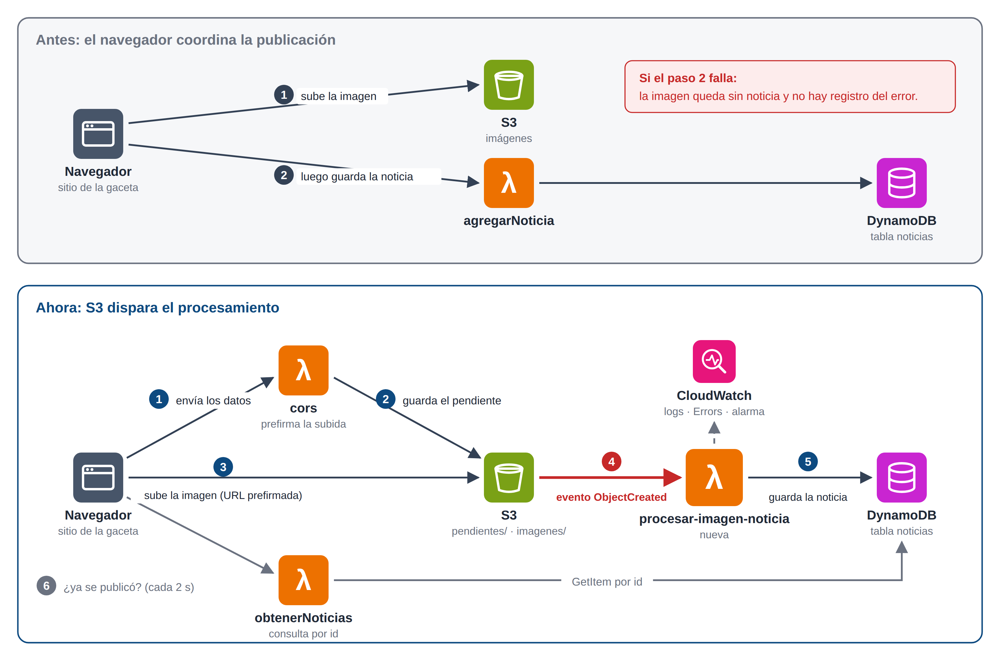
Cómo leer este manual
- Cada sección es un paso en la consola de AWS. Al final de cada una hay un recuadro verde «Comprobación» con lo que debes ver antes de continuar.
- El código está completo dentro del documento y es el mismo que está desplegado en nuestra cuenta (se inserta automáticamente desde la carpeta
codigo/de los entregables al generar este PDF). Para copiarlo sin los números de línea, usa los archivos de esa carpeta. - Las capturas son de nuestra cuenta (consola en español). El recuadro rojo señala lo que se configura o se comprueba.
- Tiempo estimado: unas dos horas, incluidas las pruebas.
Valores que debes reemplazar
En el código y en las capturas aparecen los nombres de nuestra gaceta. Antes de empezar, anota los tuyos y reemplázalos donde indica la tabla . Todos los recursos deben estar en la misma región.
| Dato | Valor en este manual | Dónde reemplazarlo |
|---|---|---|
| Región | us-east-2 (Ohio) | procesar-imagen.mjs líneas 8, 9 y 51; prefirmar-noticia.mjs línea 6; obtener-noticias.mjs líneas 6, 7 y 19; la política IAM |
| Número de cuenta | 216728240051 | Política IAM, líneas 8, 14 y 33 |
| Bucket de imágenes (privado) | mis-noticias-daniel-imagenes-906-2026 | Variable BUCKET de las funciones; obtener-noticias.mjs línea 8; política IAM, líneas 20 y 26; eventos de prueba |
| Bucket del sitio | 906-unsis-daniel | Solo para subir index.html y js/main.js |
| Tabla de DynamoDB | noticias (clave id, cadena) | Variable TABLA; obtener-noticias.mjs líneas 27 y 33; política IAM, línea 33 |
| Función de URL prefirmadas | cors | Es la que ya tienes para subir imágenes; se reemplaza su código |
| Función de lectura | obtenerNoticias | Se reemplaza su código |
| URL de las funciones | https://…lambda-url.us-east-2.on.aws/ | main.js, líneas 760 a 762 |
Los nombres nuevos (procesar-imagen-noticia, procesar-imagen-noticia-rol y gaceta-procesadora-errores) puedes conservarlos tal cual.
Revisar lo que ya existe
El cambio se apoya en recursos que la gaceta ya debe tener funcionando. Revísalos antes de tocar nada; si alguno falta, primero hay que crearlo.
En nuestra cuenta, las tres funciones originales usan el rol PowerUserRole, que ya incluía estos permisos.
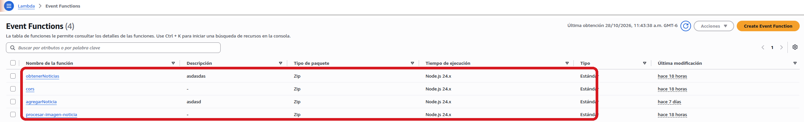
obtenerNoticias, cors y agregarNoticia) más la procesadora que crearemos. Las cuatro usan Node.js 24.x.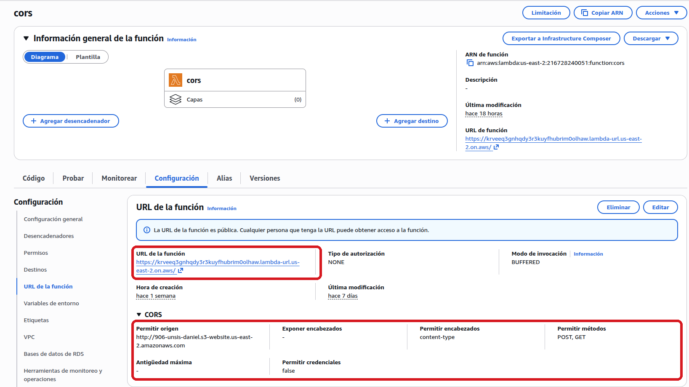
content-type y los métodos POST y GET.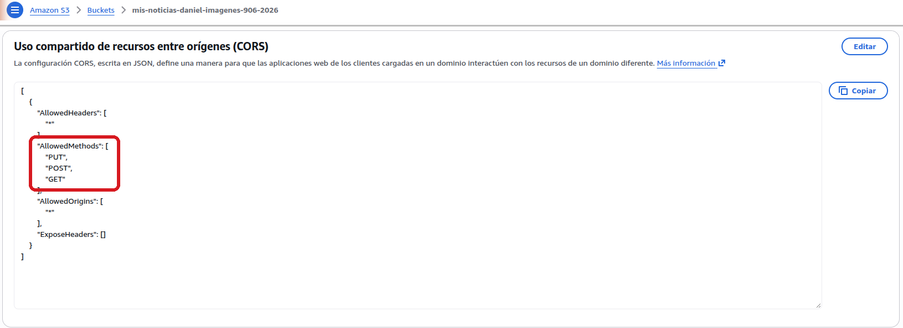
PUT, que es como el navegador sube la imagen.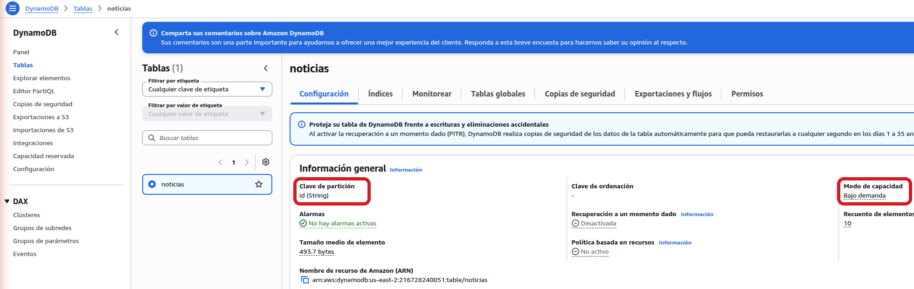
id (String) y modo de capacidad bajo demanda.Actualizar la función de prefirmadas
Ahora la web enviará primero los datos de la noticia. Esta función los valida, los guarda como «pendiente» en pendientes/ID.json y devuelve la URL para subir la imagen a imagenes/ID/foto.ext. Conserva el modo anterior (POST ?file=nombre) para no romper a quien tenga la página vieja en caché.
- Abre Lambda › Funciones › cors › Código. Copia el contenido de
index.mjsa un archivo de respaldo (nosotros lo guardamos comoprefirmadas-original.mjs). - Borra el contenido de
index.mjs, pega el código siguiente y pulsa Deploy.
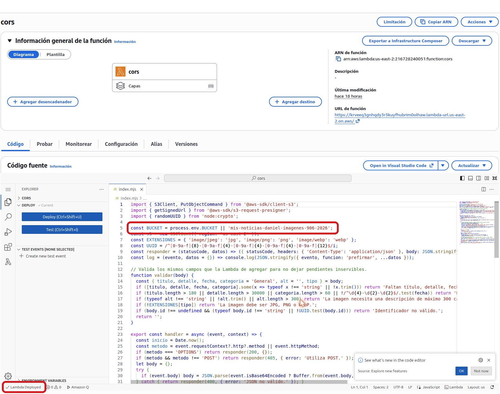
index.mjs: la línea 5 lleva el nombre del bucket y el pie del editor indica Lambda Deployed.Crear el rol de la procesadora
La función nueva solo necesita escribir sus propios logs, leer los pendientes y guardar en la tabla. Le creamos un rol con exactamente eso (mínimo privilegio), antes de crear la función para poder elegirlo desde el principio.
- En IAM › Roles › Crear rol, elige Servicio de AWS y el caso de uso Lambda (figura ).
- En Agregar permisos no marques ninguna política; pulsa Siguiente.
- Nombre:
procesar-imagen-noticia-rol. Agrega las etiquetasproyecto,equipoyentorno, y pulsa Crear rol (figura ). La descripción no acepta el carácter>. - Abre el rol y entra a Agregar permisos › Crear política insertada › JSON. Pega la política siguiente, con tu región, cuenta, bucket y tabla.
- Pulsa Siguiente, nómbrala
ProcesadoraMinimoPrivilegioy pulsa Crear política.
| Permiso | Para qué |
|---|---|
logs:CreateLogGroup, CreateLogStream, PutLogEvents | Escribir solo en su grupo de logs /aws/lambda/procesar-imagen-noticia. |
s3:GetObject en pendientes/* | Leer el JSON de la noticia. No puede leer las imágenes ni el resto del bucket. |
s3:ListBucket con prefijo pendientes/* | Que un pendiente inexistente responda NoSuchKey y no AccessDenied; así la función distingue «no hay datos» de «no tengo permiso». |
dynamodb:PutItem en la tabla | Guardar la noticia. No puede leer, borrar ni recorrer la tabla. |
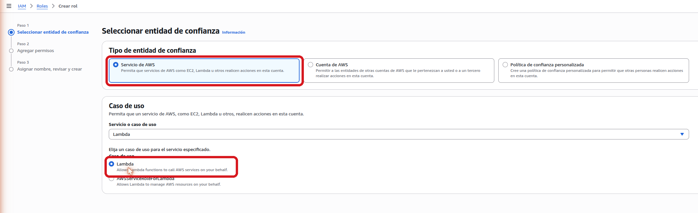
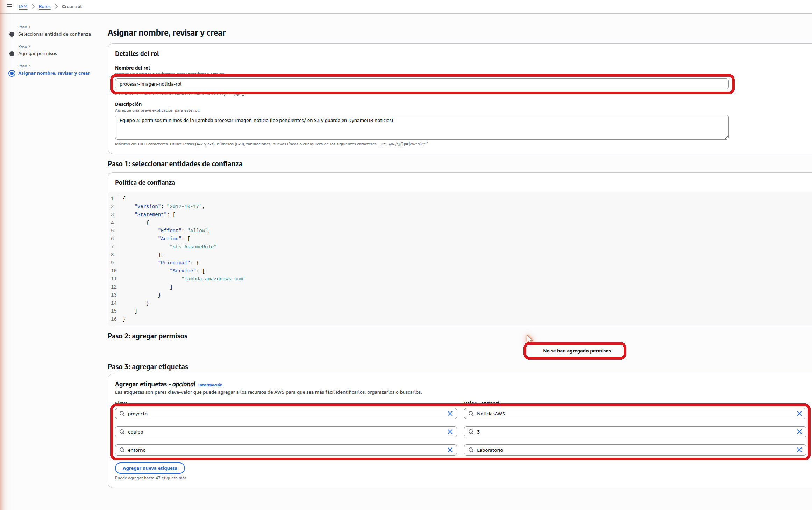
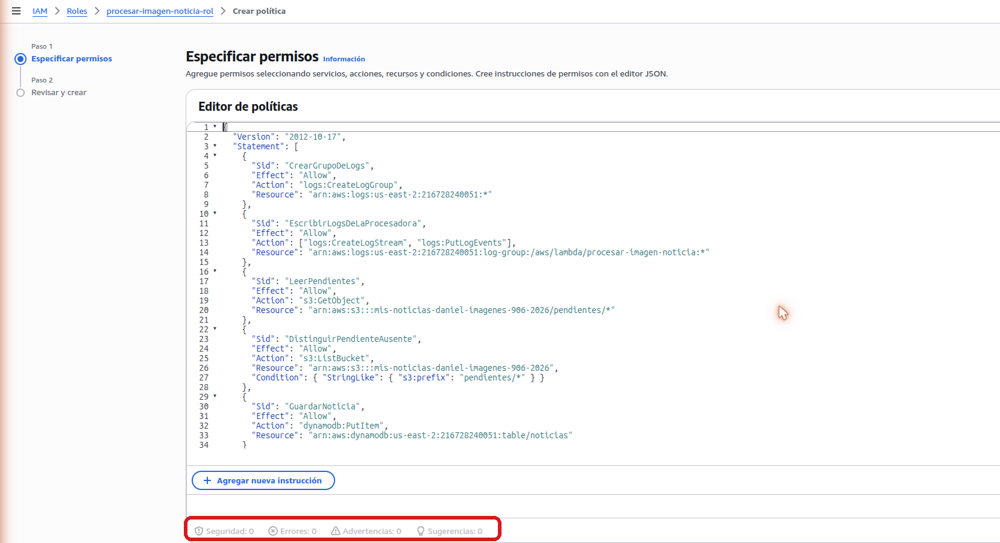
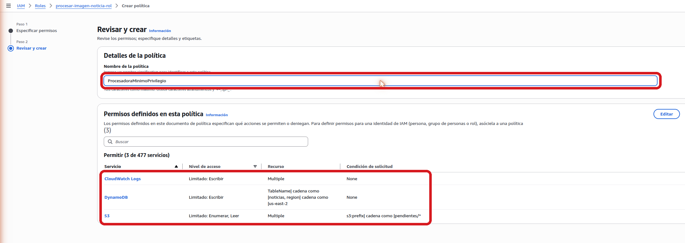
ProcesadoraMinimoPrivilegio y resumen: escritura limitada en CloudWatch Logs y DynamoDB, y lectura limitada en S3 con la condición de prefijo pendientes/*.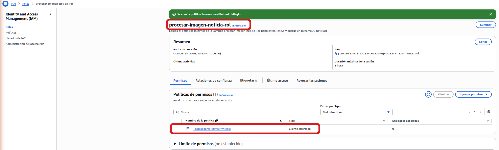
Crear la función procesadora
- En Lambda › Crear función › Crear desde cero, escribe el nombre
procesar-imagen-noticiay elige Node.js 24.x. - En Configuración adicional, activa Rol de ejecución personalizada y elige
procesar-imagen-noticia-rol. En la figura aparecePowerUserRoleporque nosotros cambiamos el rol después; tú puedes elegir el nuevo desde aquí. - Pulsa Crear función. En Código, reemplaza el contenido de
index.mjspor el código siguiente y pulsa Deploy. - En Configuración › Configuración general › Editar, sube el tiempo de espera a 30 segundos y confirma el rol (figura ).
- En Configuración › Variables de entorno › Editar, agrega
BUCKETcon el nombre de tu bucket de imágenes yTABLAconnoticias(figura ).
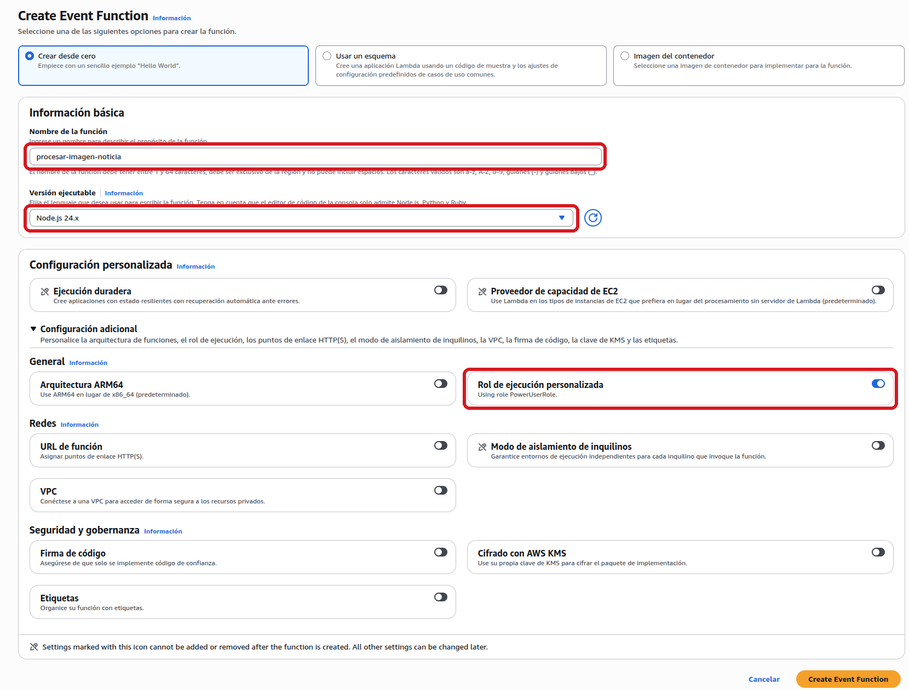
Así trabaja la función: toma la clave de la imagen, obtiene el id, lee pendientes/ID.json, valida los campos y guarda la noticia con la condición attribute_not_exists(id), que impide duplicarla. Los errores de datos (pendiente ausente, campos inválidos) se registran y no se reintentan; los errores de infraestructura (por ejemplo, DynamoDB no responde) se relanzan para que Lambda reintente y CloudWatch cuente el error.
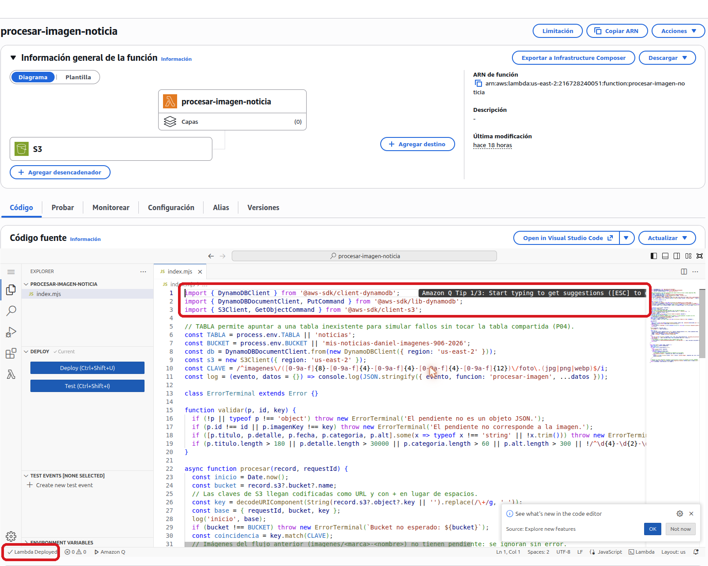
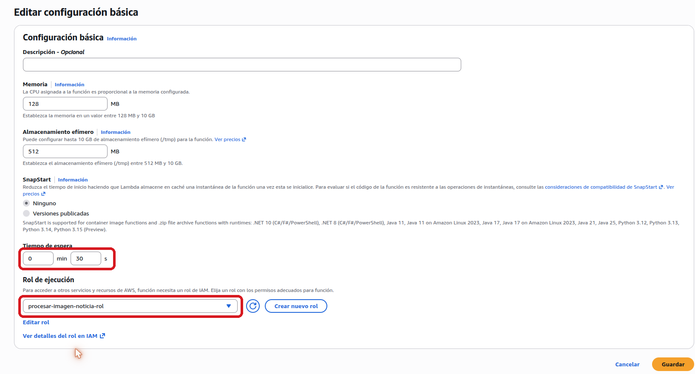
procesar-imagen-noticia-rol.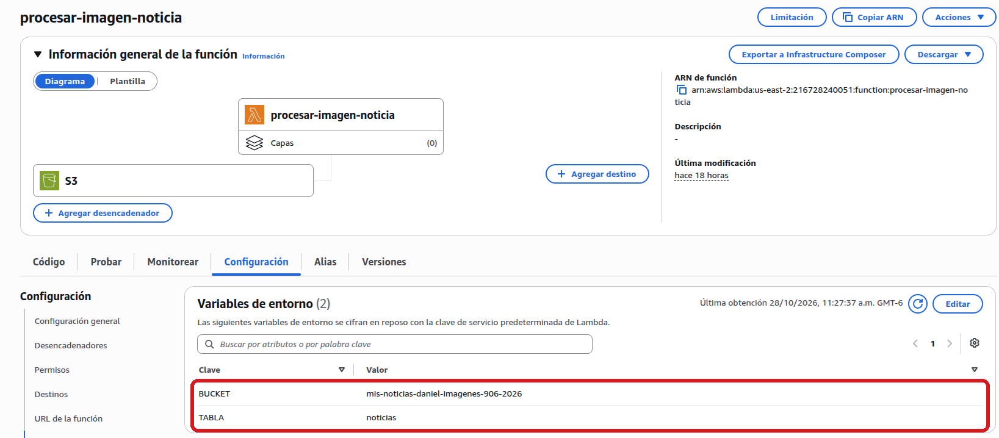
TABLA permite simular un fallo de DynamoDB sin tocar la tabla real (prueba P04).Conectar S3 con la función
- En la procesadora, pulsa Agregar desencadenador y elige S3.
- Bucket: tu bucket de imágenes. Tipo de evento: Todos los eventos de creación de objetos. Prefijo:
imagenes/. Sufijo: vacío. - Marca el aviso de invocación recurrente y pulsa Agregar. No hay ciclo: la función no escribe en S3, y los pendientes están fuera de
imagenes/.
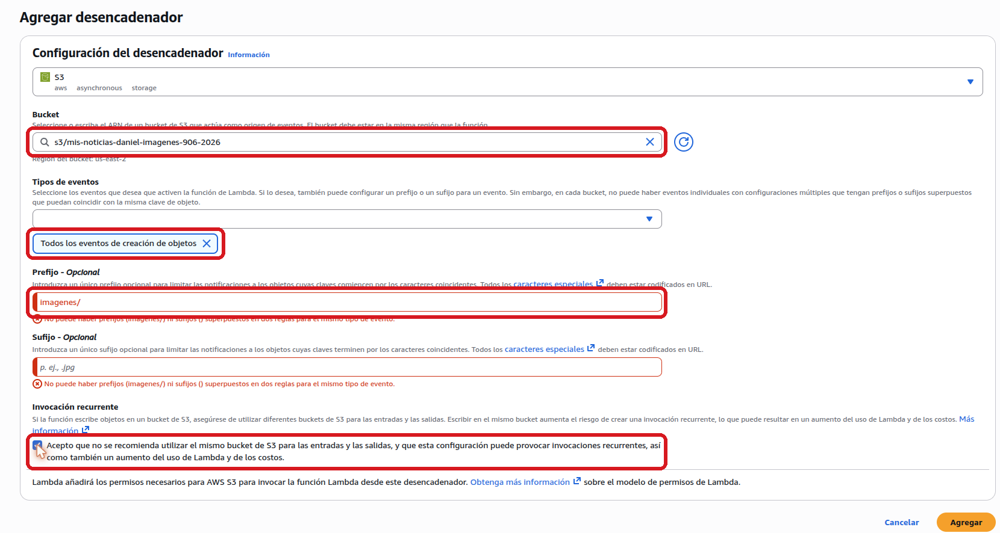
Lambda agrega por sí sola el permiso para que S3 invoque la función, limitado a tu cuenta y a tu bucket (figura ), y la regla aparece también en las propiedades del bucket (figura ).
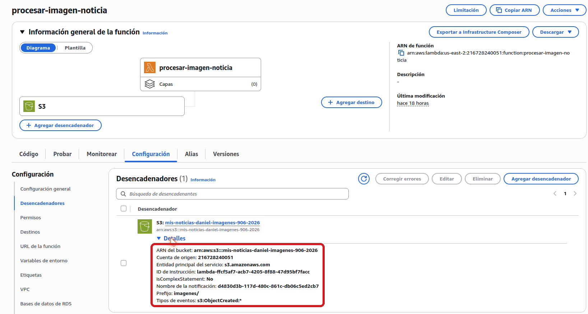
imagenes/ y tipo de evento s3:ObjectCreated:*.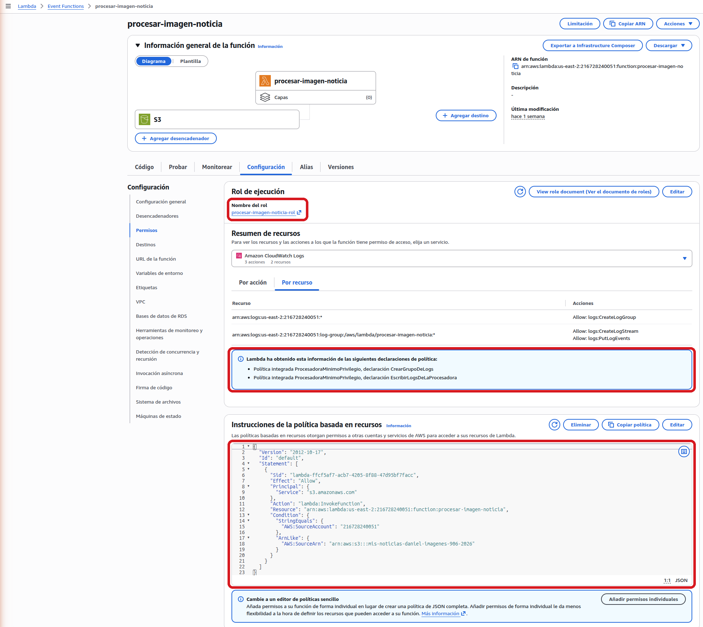
procesar-imagen-noticia-rol y las declaraciones de ProcesadoraMinimoPrivilegio. Abajo, la política basada en recursos que agregó Lambda: permite a s3.amazonaws.com invocar la función solo desde tu cuenta (AWS:SourceAccount) y tu bucket (AWS:SourceArn).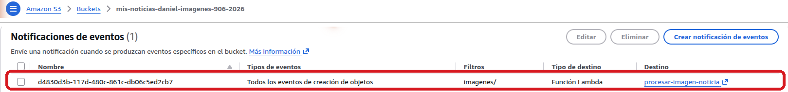
imagenes/ y destino procesar-imagen-noticia.Agregar la consulta por id
Como el guardado ahora es asíncrono, la web necesita preguntar si la noticia ya se publicó. Reemplazamos el código de obtenerNoticias para que, además del listado completo, responda GET ?id=ID con {"estado":"pendiente"} o {"estado":"publicada","item":…}. La lectura por id es consistente, así que en cuanto la procesadora guarda, la consulta la ve.
- Abre Lambda › obtenerNoticias › Código, respalda el código actual y reemplázalo por el siguiente.
- Pulsa Deploy. Recuerda que su rol necesita
dynamodb:GetItem.
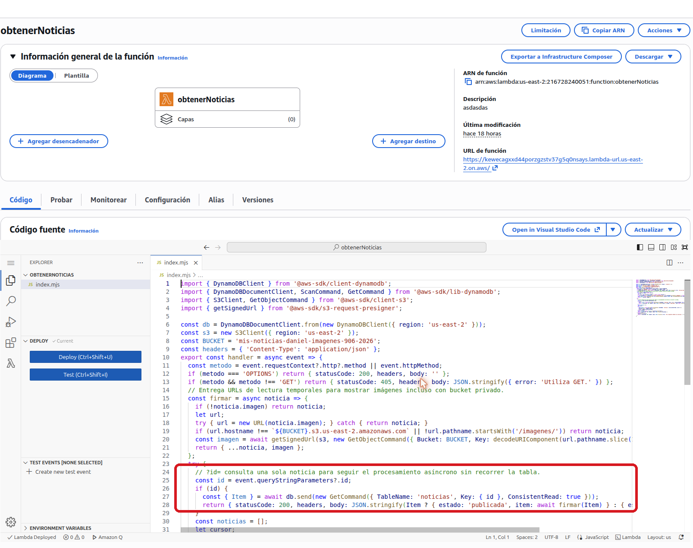
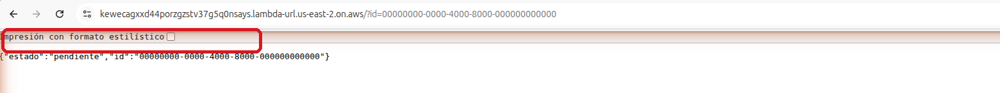
obtenerNoticias?id=… en el navegador para un id que no existe (comprobada el 4 de noviembre).Publicar el nuevo sitio
El main.js nuevo cambia el envío de noticias con imagen: manda los datos a la función de prefirmadas, sube la imagen con la URL que recibe y consulta el estado cada 2 segundos, hasta 10 veces. Ya no llama a agregarNoticia cuando hay imagen; las noticias sin imagen la siguen usando, porque no generan evento de S3.
- En
js/main.js, pon las URL de tus funciones (líneas 760 a 762). - En S3 › bucket del sitio › js/ › Cargar, sube
main.js. - En
index.html, cambia el texto después de?v=en la etiqueta del script y sube tambiénindex.html. Sin este cambio, el navegador sigue usando elmain.jsanterior que tiene en caché; a nosotros nos pasó.
<script src="js/main.js?v=noticias-s3-evento-1" defer></script>
Estas son las partes de main.js que intervienen. El archivo completo, con el resto de la página, está en codigo/main.js.
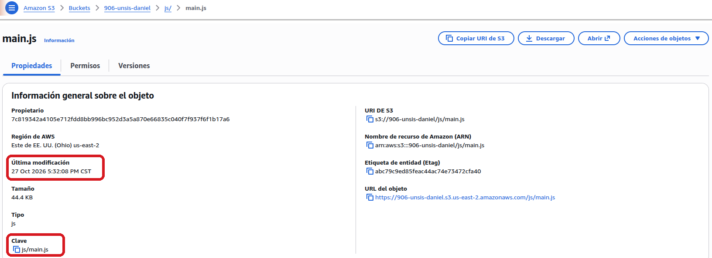
Configurar reintentos y retención de logs
Reintentos. S3 invoca la función de forma asíncrona: si la función falla, Lambda la vuelve a intentar. En Configuración › Invocación asíncrona › Editar, escribe 1 hora, 0 min y 0 s en «Antigüedad máxima del evento», 2 en «Reintentos», deja la cola de mensajes fallidos en «Ninguno» y pulsa Guardar.
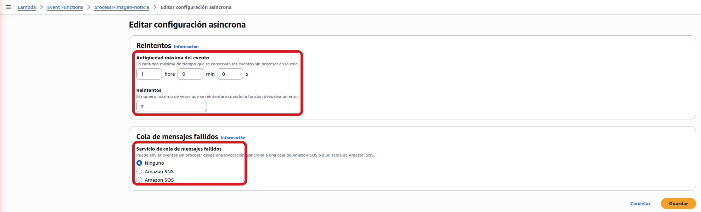
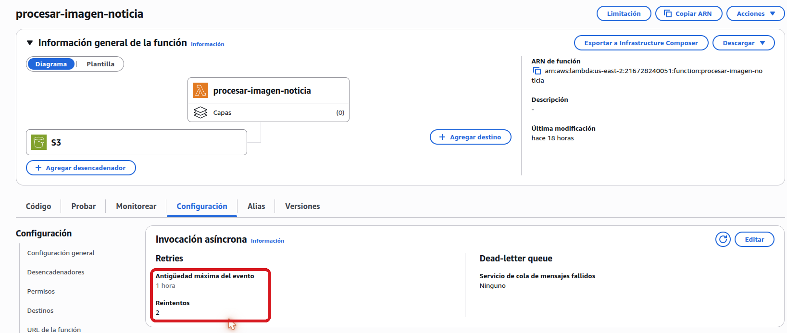
Retención de logs. Por defecto, CloudWatch guarda los logs para siempre, y el almacenamiento se cobra. En CloudWatch › Registros › Administración de registros, abre /aws/lambda/procesar-imagen-noticia y, en Acciones › Editar configuración de retención, elige Días 3 en «Marcar eventos como vencidos después de» y pulsa Guardar. El grupo existe desde la primera ejecución de la función; si no aparece, ejecuta antes la comprobación de la función procesadora.
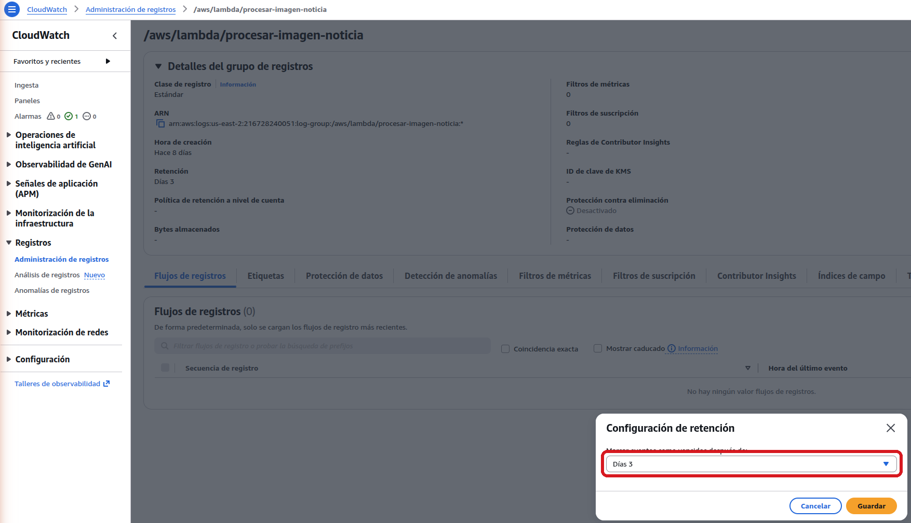
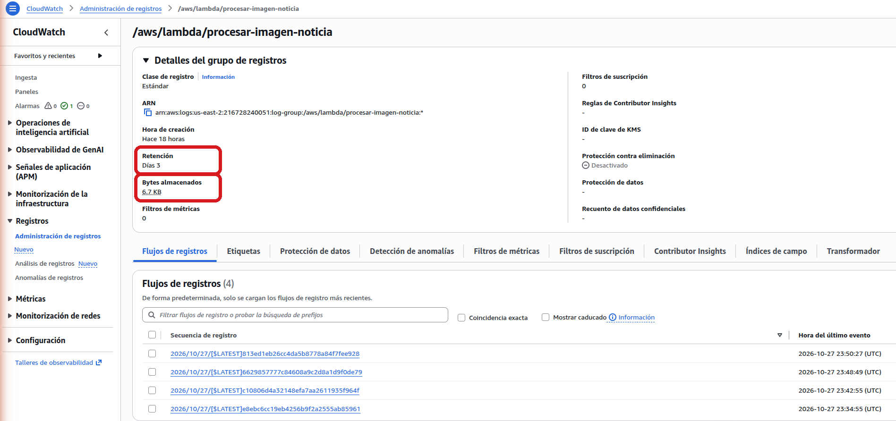
La función escribe una línea JSON por etapa (inicio, validado, guardado, duplicado, validacion_fallida, omitido_sin_formato y fallo) con requestId, bucket, key, noticiaId y duracionMs. No registra el texto de la noticia ni ninguna URL firmada.
Crear la alarma
La señal que vigilamos es la métrica Errors que Lambda publica sola en CloudWatch, sin costo: cuenta las ejecuciones que terminan con error. El asistente tiene cuatro pasos.
Paso 1: métrica y condiciones
- En CloudWatch › Alarmas, pulsa Crear alarma. Deja «Métricas» y «Clásico» y pulsa Seleccione una métrica (figura ).
- En el selector, entra a Lambda › Por nombre de función, busca
procesar-imagen-noticia, marca la filaErrorsy pulsa Seleccionar una métrica (figura ). - En Métrica, elige la estadística Suma y el periodo 1 minuto.
- En Condiciones: tipo Estático, Mayor/Igual que 1.
- Abre Configuración adicional: 1 de 1 puntos de datos y Tratar los datos que faltan como correctos; si no, la alarma queda en «Datos insuficientes» cuando no hay publicaciones. Pulsa Siguiente (figura ).
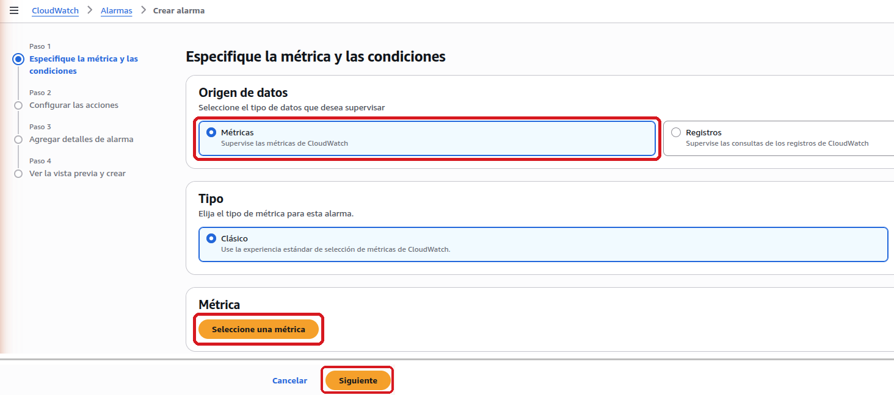
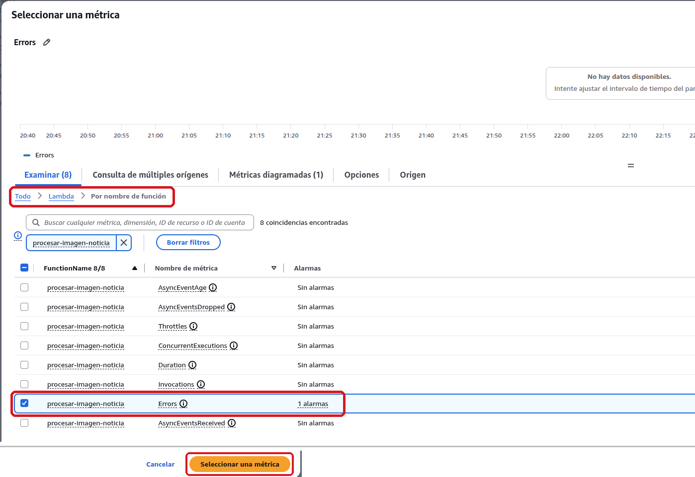
Errors marcada. En nuestra cuenta la columna dice «1 alarmas» porque la alarma ya existe; en una cuenta nueva dirá «Sin alarmas».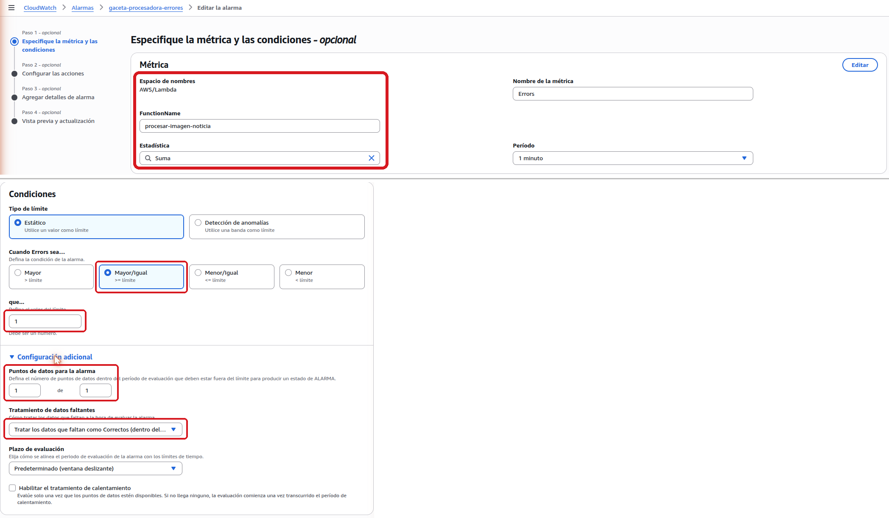
AWS/Lambda, Errors, la función y la suma por minuto. Abajo, las condiciones y la configuración adicional.Paso 2: acciones
No agregues ninguna acción (sin SNS no hay correos ni suscripciones, y no hay costo extra). Pulsa Siguiente; la consola avisa que no hay acciones configuradas: pulsa Proceder sin acciones.
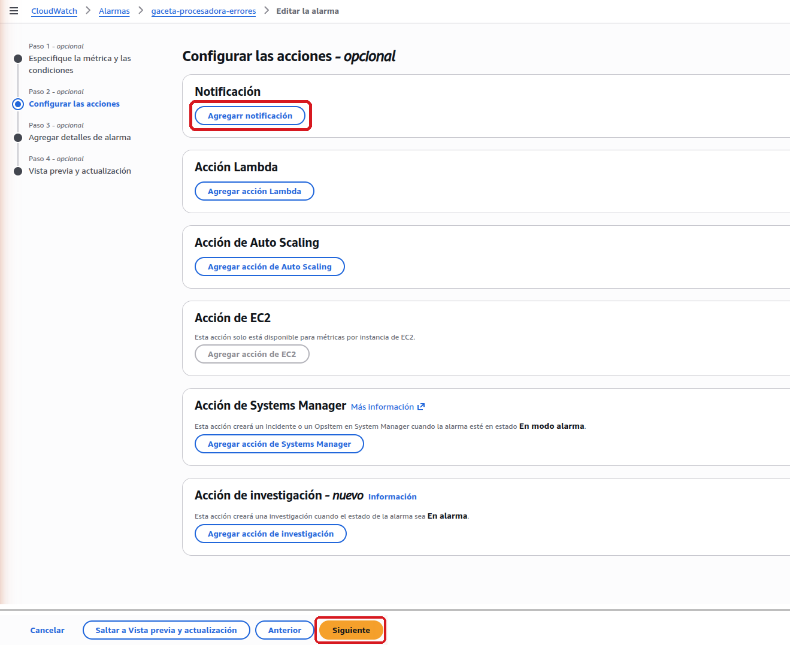
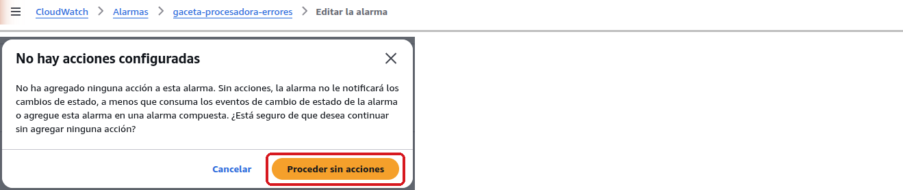
Paso 3: nombre y descripción
Escribe el nombre gaceta-procesadora-errores, una descripción y las etiquetas proyecto, equipo y entorno. Pulsa Siguiente.
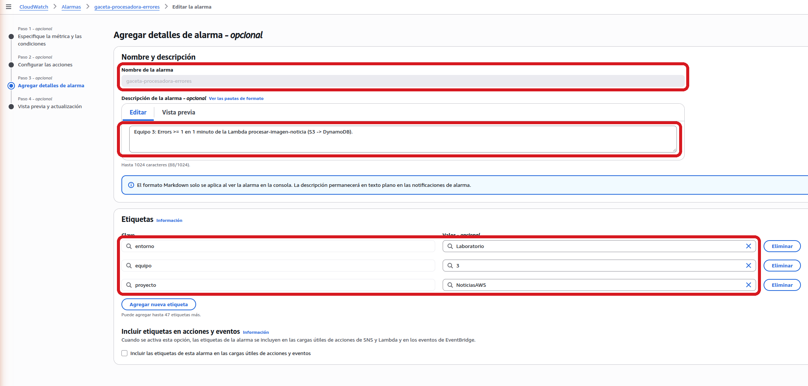
Paso 4: vista previa
Revisa el resumen y pulsa Crear alarma (en la edición, el botón dice «Actualizar alarma»).
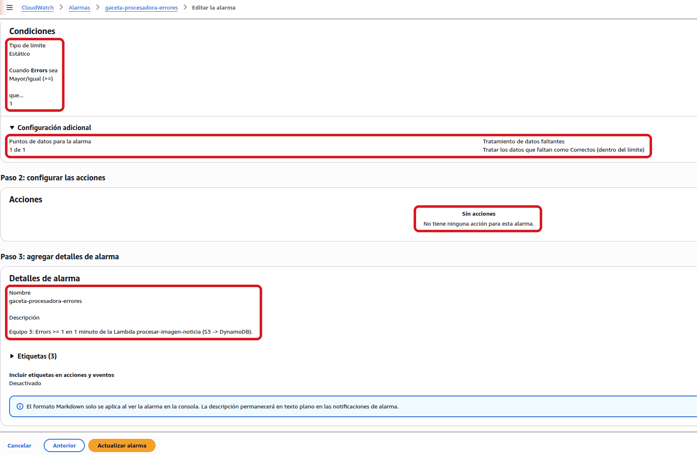
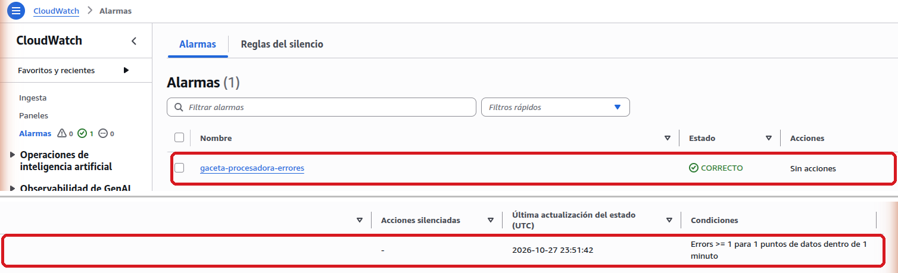
Etiquetar los recursos
Para identificar el costo de lo que creamos, etiquetamos la procesadora (Configuración › Etiquetas), su rol (al crearlo) y la alarma (pestaña Etiquetas) con proyecto=NoticiasAWS, equipo=3 y entorno=Laboratorio. Los recursos compartidos no se etiquetaron.
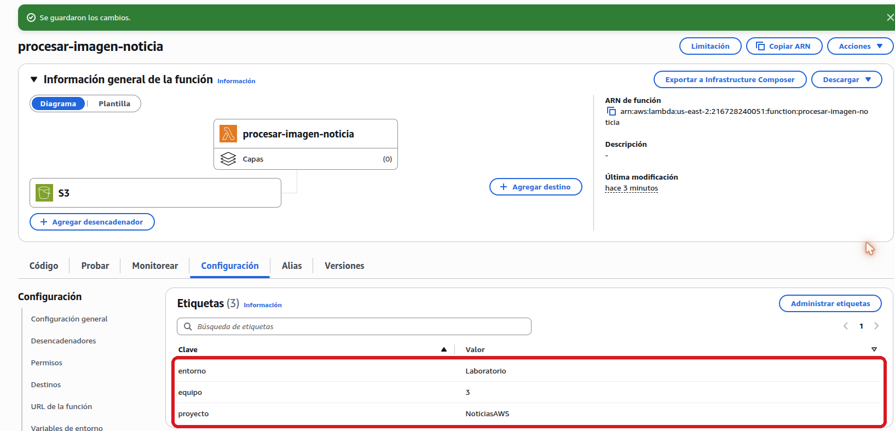
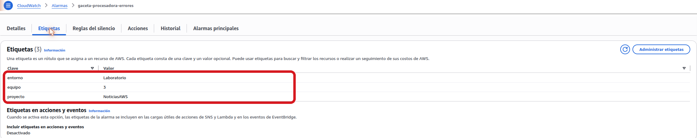
Verificación de punta a punta
Con todo configurado, se comprueba el flujo en condiciones normales y provocando fallos a propósito. Las pruebas P01, P02, P04 y P08 se hacen desde el sitio; P03 y P07 con la pestaña Probar de la procesadora y los eventos de la carpeta pruebas/ del repositorio, cambiando el bucket y el id por los tuyos. La tabla resume lo que debe pasar; nosotros obtuvimos ese resultado en todas.
| Prueba | Qué se hace | Resultado esperado |
|---|---|---|
| P01 | Publicar una noticia con imagen desde el sitio | «Noticia publicada correctamente»; en el log, inicio → validado → guardado; en Red, ninguna llamada a agregarNoticia |
| P02 | Revisar la tabla y recargar el sitio | La noticia está en DynamoDB con origen = s3-evento y se ve con su imagen |
| P03 | Evento de una imagen sin pendiente | Ejecución sin error; log validacion_fallida por NoSuchKey; no se crea noticia |
| P04 | Poner TABLA a una tabla inexistente y publicar | 3 intentos fallidos con el mismo requestId; al restaurar TABLA y reprocesar, se guarda con el mismo id |
| P05 | Ver Monitorear después de P04 | La métrica Errors sube; en eventos asíncronos, 3 recibidos y 1 eliminado |
| P06 | Ver la alarma durante y después de P04 | Pasa a «En modo alarma» y vuelve a «Correcto» unos 5 minutos después |
| P07 | Reenviar el evento de la imagen de P01 | Log duplicado; la tabla conserva un solo registro |
| P08 | Publicar mientras la tabla está «caída» | El sitio avisa que sigue en procesamiento, sin reenviar; tras la recuperación aparece una sola vez |
P01 y P02: publicación normal
Publica una noticia con imagen desde «Crear noticia». El sitio dice «Imagen recibida. Procesando la noticia…» y, uno o dos segundos después, «Noticia publicada correctamente».
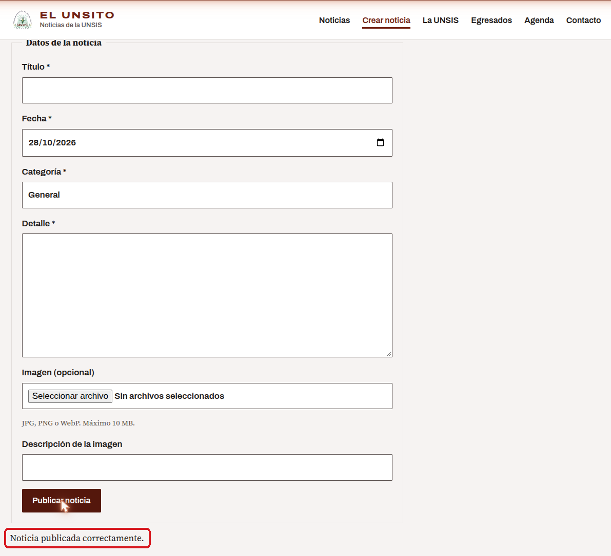
En CloudWatch › grupo de logs de la procesadora, abre el flujo más reciente: se ven las tres etapas de la publicación y la duración.
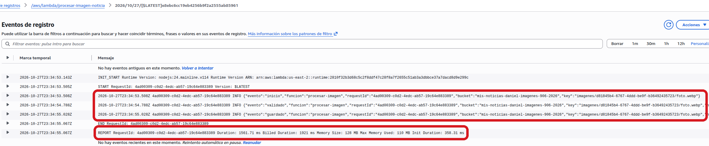
inicio, validado y guardado; el procesamiento completo duró 1 561 ms.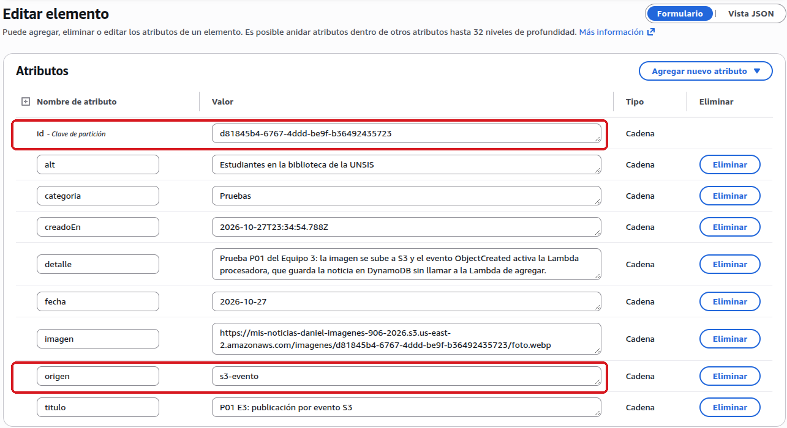
origen = s3-evento, prueba de que la guardó la procesadora.P03: imagen sin datos
En Probar, ejecuta el evento evento-s3-sin-pendiente.json (el mismo de la comprobación de la función procesadora).
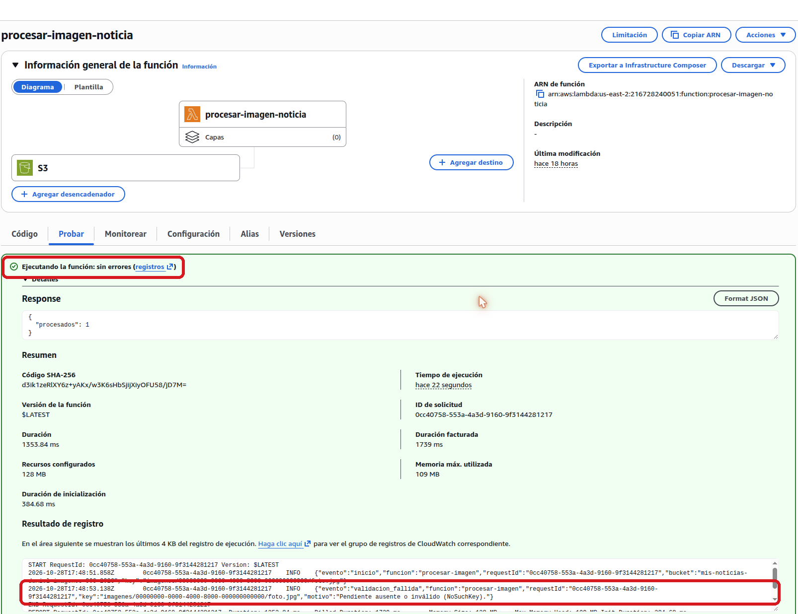
validacion_fallida con el motivo «Pendiente ausente o inválido (NoSuchKey)».P04 a P06: falla de la base de datos, métrica y alarma
Para simular que DynamoDB falla sin dañar la tabla real, cambia la variable TABLA por un nombre que no exista, por ejemplo noticias-falla-lab, y publica una noticia con imagen.
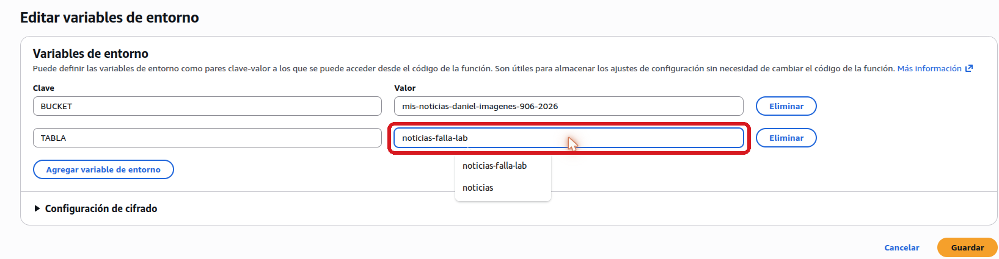
TABLA = noticias-falla-lab.En el grupo de logs, filtra con ?fallo ?ResourceNotFoundException más parte del id. Deben aparecer tres intentos con el mismo requestId: el original y los dos reintentos, separados por uno o dos minutos.
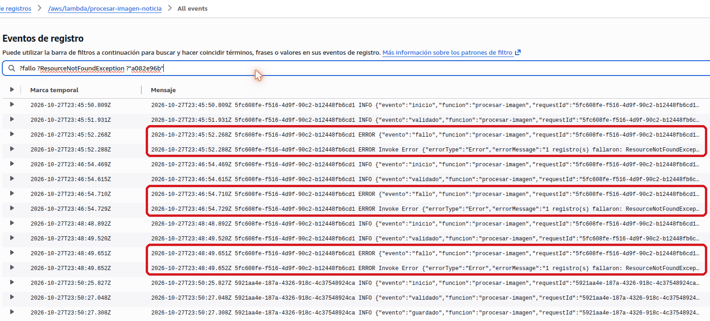
requestId (23:45:52, 23:46:54 y 23:48:49 UTC). Las últimas tres líneas son la recuperación.Restaura TABLA = noticias. Si los reintentos ya se agotaron, reprocesa el evento en Probar con evento-s3-recuperacion-p04.json (con el id de tu noticia). La noticia se guarda con el mismo id.
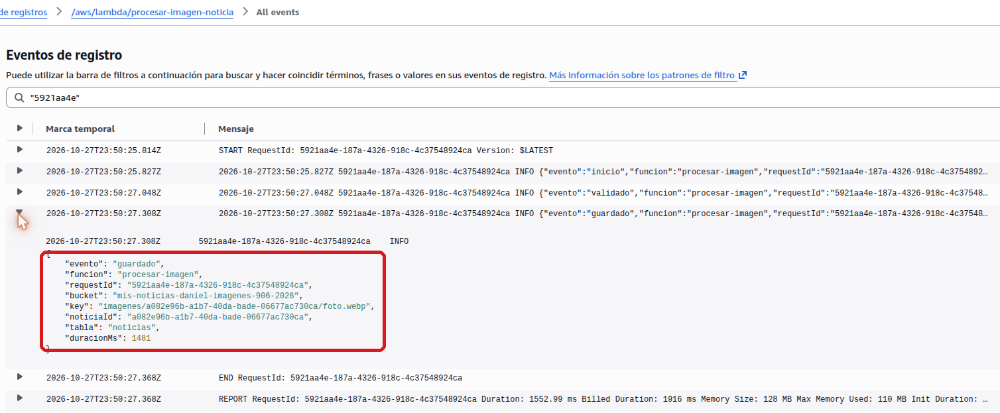
guardado en la tabla noticias con el id de la noticia que había fallado.En la pestaña Monitorear de la procesadora se ve la falla en las métricas nativas de Lambda.
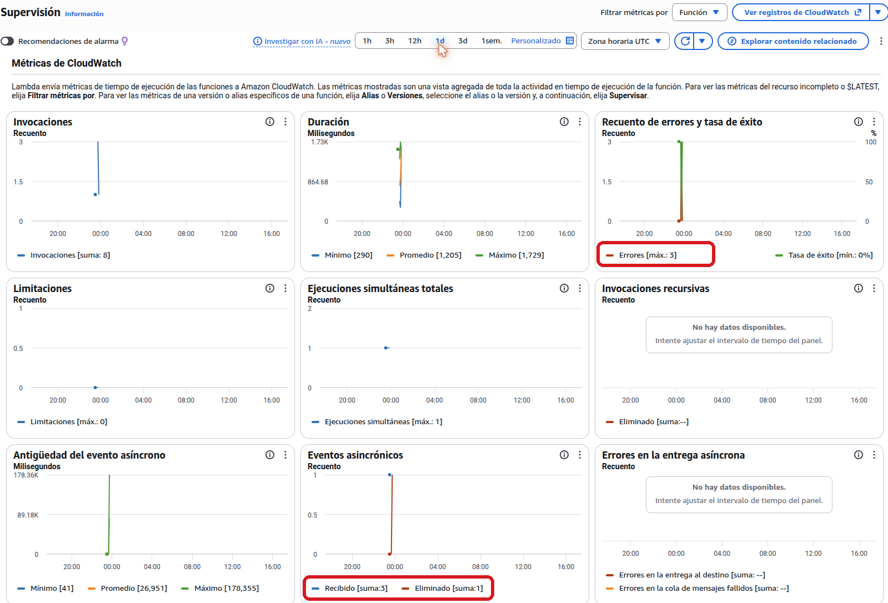
Errors y tasa de éxito mínima del 0 %, y «Eventos asincrónicos» con 3 recibidos y 1 eliminado tras agotar los reintentos.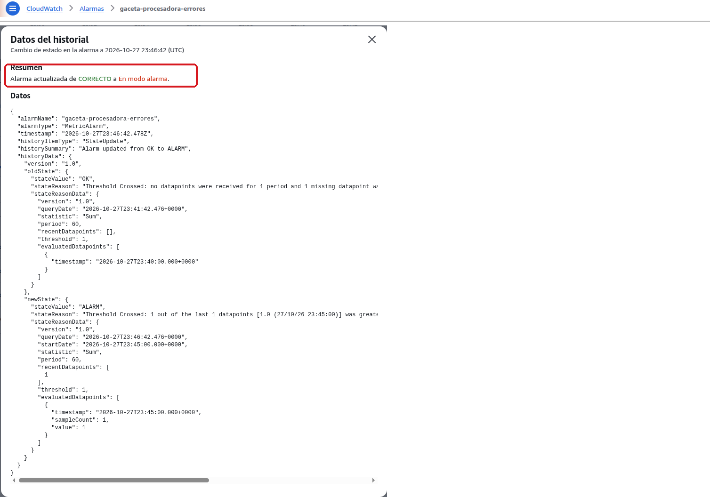
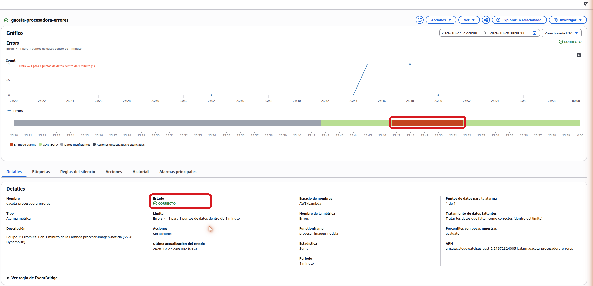
P07: evento repetido
S3 puede entregar un mismo evento más de una vez. Ejecuta en Probar el evento de la imagen de P01 (evento-s3-duplicado.json, con tu id).
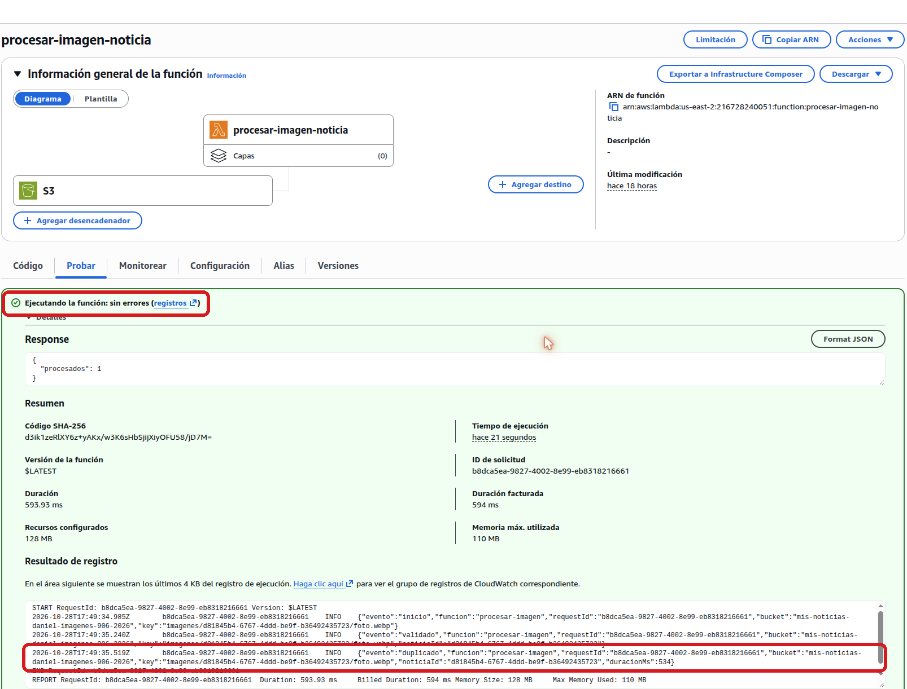
duplicado para la misma noticia; la tabla conserva un solo registro.P08: procesamiento lento
Repite la falla de P04 y publica desde el sitio. Tras 10 consultas (unos 20 segundos), el sitio avisa que la noticia sigue en procesamiento, sin volver a enviarla. Al restaurar TABLA, uno de los reintentos automáticos la guarda y aparece una sola vez.
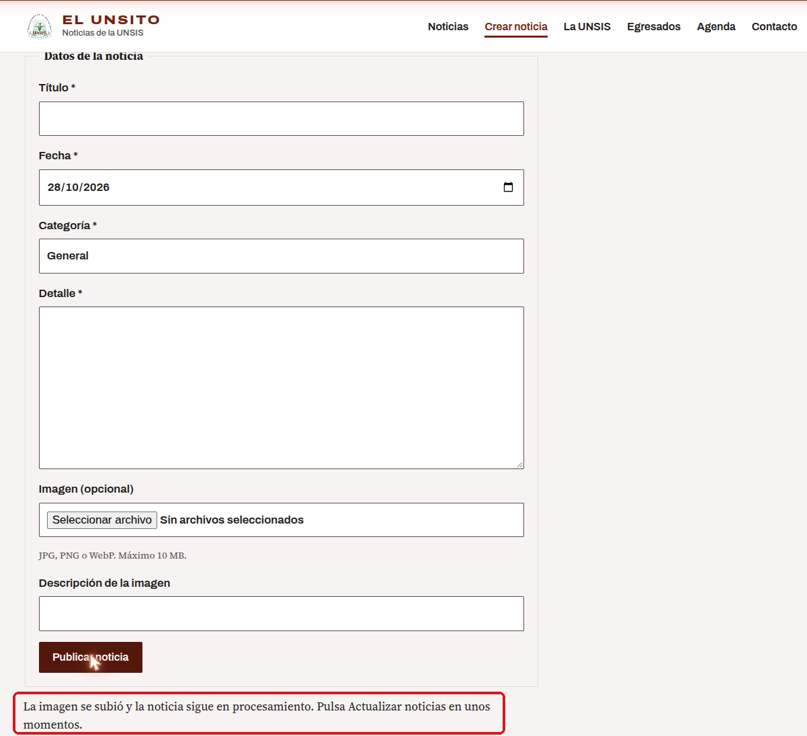
Prueba del código sin AWS
Además de las pruebas en AWS, el repositorio incluye documentacion/herramientas/prueba-local/, que ejecuta las tres funciones de este manual en el navegador contra S3 y DynamoDB simulados. Comprueba 13 casos (P01–P04, P07, la consulta ?id=, el modo ?file= y la lista). Al revisar este manual, los 13 pasaron.
python3 -m http.server 8765 # desde la raíz del repositorio # abrir http://127.0.0.1:8765/documentacion/herramientas/prueba-local/prueba.html
Revisión del estado en AWS
El 4 de noviembre de 2026, al revisar este manual, volvimos a abrir cada recurso en la consola (solo lectura: los formularios se abrieron y se cancelaron sin guardar). Todo seguía como lo describe el manual.
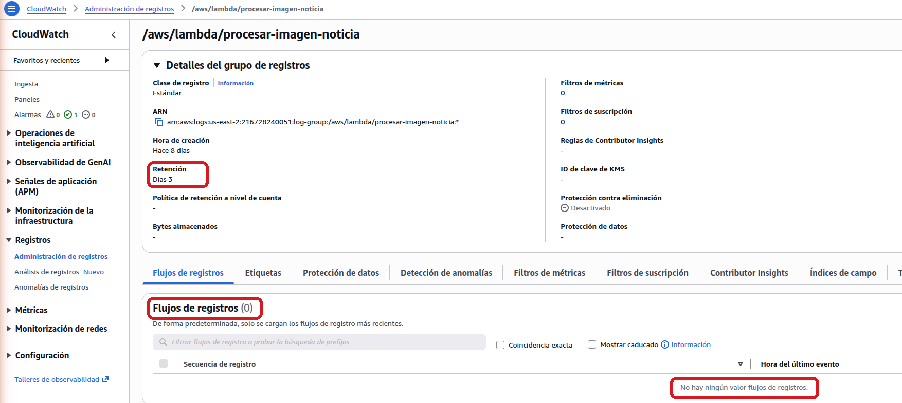
Las pruebas P01 a P08 no se repitieron ese día, para no escribir datos nuevos en la tabla compartida; sus capturas son de la ejecución del 27 y 28 de octubre.
Costos
Cómo cobra CloudWatch
CloudWatch no tiene cuota fija: se paga por uso, por lo que se envía y se guarda. La tabla resume los conceptos que tocan a este proyecto, con los precios de lista de la región us-east-2 publicados por AWS (consultados en noviembre de 2026; pueden cambiar). La capa gratuita se aplica cada mes y por cuenta.
| Concepto | Precio | Capa gratuita mensual |
|---|---|---|
Métricas que publican los servicios de AWS (Errors, Invocations, Duration de Lambda) | Sin costo | — |
| Métricas personalizadas | 0.30 USD por métrica al mes | 10 métricas |
| Alarma de resolución estándar (60 s) | 0.10 USD por métrica de alarma al mes | 10 alarmas |
| Alarma de alta resolución (10 s) | 0.30 USD por métrica de alarma al mes | No aplica |
| Ingesta de logs | 0.50 USD por GB (los de Lambda bajan por volumen hasta 0.05 USD por GB) | 5 GB en total entre ingesta, almacenamiento y consultas |
| Almacenamiento de logs | 0.03 USD por GB al mes | |
| Consultas con Logs Insights | 0.005 USD por GB analizado | |
| Paneles (dashboards) | 3.00 USD por panel al mes | 3 paneles |
Por eso tomamos tres decisiones: usar la métrica nativa Errors en lugar de una personalizada, crear una sola alarma estándar sin acciones de SNS y limitar la retención de logs a 3 días, para que el almacenamiento no crezca.
Cuánto nos costó
El gasto real fue de 0.00 USD: todo quedó dentro de la capa gratuita, igual que Lambda, S3 y DynamoDB. La consola mostró 120.00 USD de créditos y 0.00 USD de gasto en el mes antes de empezar y al terminar (figuras y ). Aun sin capa gratuita, el costo sería de unos 10 centavos de dólar al mes, casi todo por la alarma. Como referencia, cada publicación genera alrededor de 1 KB de logs: una gaceta con 1 000 noticias al mes ingeriría cerca de 1 MB, unos 0.0005 USD.
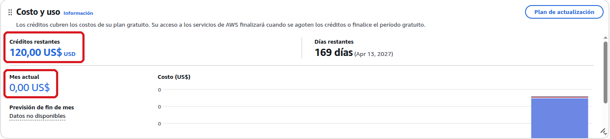
Una semana después seguía igual. En la página de facturación, los créditos restantes eran 120.00 USD y el importe a pagar 0.00 USD, es decir, octubre no consumió créditos. En Cost Explorer, agrupando por servicio y excluyendo créditos y reembolsos (lo que costaría sin créditos), CloudWatch marca 0.00 USD.
Problemas frecuentes
| Síntoma | Causa y solución |
|---|---|
El sitio sigue llamando a agregarNoticia al publicar con imagen | El navegador usa el main.js viejo de la caché. Cambia el ?v= en index.html, súbelo y recarga con Ctrl+F5. |
| Error de CORS al enviar la noticia | Revisa la URL de función de prefirmadas: origen del sitio, encabezado content-type y método POST. |
| Falla la subida de la imagen (403 o CORS) | El CORS del bucket debe permitir PUT. La URL firmada vence a los 5 minutos. |
| «No puede haber prefijos superpuestos» al crear el disparador | Ya existe una regla sobre imagenes/. Revisa S3 › Propiedades › Notificaciones de eventos. |
El log dice AccessDenied en lugar de NoSuchKey | Falta s3:ListBucket con la condición de prefijo en la política del rol. |
El log dice Bucket no esperado | El evento de prueba o la variable BUCKET tienen otro nombre de bucket. |
| La noticia se queda «en procesamiento» | Busca fallo en los logs. Lambda reintenta dos veces durante una hora; al corregir la causa, el reintento la guarda. |
| No aparece el grupo de logs | Se crea con la primera ejecución: ejecuta una prueba en Probar. |
| La alarma se queda en «Datos insuficientes» | Configura «Tratar los datos que faltan como correctos». |
Limpieza
Al terminar el curso, eliminaremos los recursos en este orden:
- El desencadenador de S3 de la procesadora.
- La función
procesar-imagen-noticiay el rolprocesar-imagen-noticia-rol. - La alarma
gaceta-procesadora-errores. - El grupo de logs
/aws/lambda/procesar-imagen-noticia. - Los objetos de
pendientes/, las imágenes de prueba y las noticias de prueba de la tabla.
Si el sitio sigue en uso, antes hay que restaurar en cors el código original (prefirmadas-original.mjs) y el main.js anterior; si no, las noticias con imagen dejarían de guardarse.